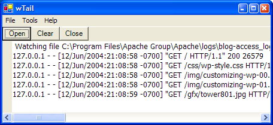
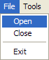
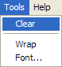
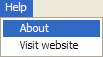

What is it?
wTail does what Unix command tail does except it does it on Windows and has a GUI interface.
To those not familiar with tail. Imagine you develop a PHP app. If the app throws warnings or errors, it'll write them to Apache error log. That's why you want to watch addition to error log file. This app helps exactly in that: you select a file and then you can see all changes made to a file in a window.
You can also change the font and and clear the window content with a press of a button.
Of course you can watch any kinds of files, not only Apache logs.
Download
Download wTail.zip (requires .NET Framework 1.1). Inside you'll find wTail.exe and ScintillaNET.dll. You can put them anywhere you like as long as ScintillaNET.dll is in %PATH%.Source code
You can get the sources from project site.Screenshots
Here's how it looks (watching Apache's access log file):
The shortest manual in the world:|  |  |  |
File/Open is for selecting file to watch.
File/Close is for stoping watching the file.
File/Exit is for exiting the app.
Tools/Clear clears the output window.
Tools/Wrap is for changing of wrapping of the output window.
File/Font... is for changing the font used to display the file. Unfortunately this setting is not persisted.
Help/About brings embarassingly ugly About dialog box.
Help/Visit website will bring you to this page.
Version history
0.1 (2004-06-12):- first version
Todo
There's potential for improvements:
- ability to watch multiple files, use tab-based interface
- remember all opened files, add the "open recent..."
- add, as an option, ability to auto-scroll the view